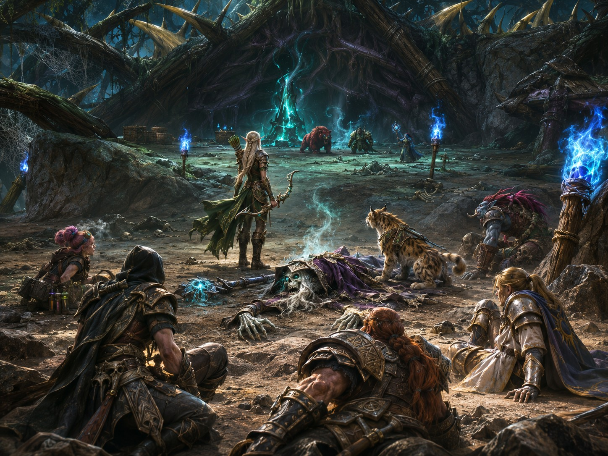

Unfinished Business with the Wildhammer
Sylthara and I began another morning in the Hinterlands. Although we had accomplished much among the Wildhammer dwarves yesterday, several obligations remained before we could depart their mountainous homeland.
I have grown rather fond of Aerie Peak. The Wildhammer established their home here after abandoning Grim Batol, and their magnificent gryphons seem as much a part of their lives as the mountains themselves.
Having been born among the clouds, I feel a certain kinship with these dwarves. They understand something of the freedom that comes with taking to the skies.
I reported my findings concerning the Altar of Zul to Gryphon Master Talonaxe. My concern for the missing gryphon Sharpbeak had not diminished, and I was entrusted with carrying one of his feathers to Thadius Grimshade at Nethergarde Keep.
Our remaining duties included clearing the troublesome sludges and oozes of Skulk Rock, collecting troll necklaces for Fraggar Thundermantle, and recovering Vilebranch totems for Farseer Maret Firetend.
Korgrum Bondsmith had lent his strength to our efforts against the trolls. I was grateful for his assistance. Even a hunter of the High Order benefits from dependable companions in dangerous country.
Sharpbeak's fate remained a concern, one I was unwilling to forget.
A Fisherman's Challenge
My ambitions today extended beyond hunting with bow and blade. I wished to become an artisan fisherwoman, although I soon discovered that Nat Pagle had a rather peculiar understanding of what constituted a reasonable fishing lesson.
I found him near Tidefury Cove, south of Theramore. Rather than simply imparting his knowledge, he challenged me to collect four unusual fish from widely separated corners of Azeroth.
Four fish. Two continents.
Surely there must be a simpler way to teach someone how to use a fishing pole.
By midmorning, I had expressed my displeasure to my companions in Mid Life Aggro.
"I hate Nat Pagle, this will take hours to complete, damn fishing quest."
Nevertheless, I had accepted his challenge. A hunter of the High Order does not abandon a task merely because it is inconvenient, however tempting that prospect might be.
The Shores of Kalimdor
Our first destination was Sar'theris Strand in Desolace.
The coastline was surprisingly beautiful compared with the barren interior. Beneath its waters lay a world of color and life quite unlike the dusty plains behind us.
After casting my line into the sea, I finally caught a Sar'theris Striker.
One fish down.
We continued south into Feralas, where the towering trees and lush vegetation offered a welcome change from Desolace. Along the Verdantis River, I successfully caught the Feralas Ahi.
While in Feralas, I also attended to an outstanding obligation for Yeh'kinya, capturing the spirits of three screechers destined for the mysterious troll at Steamwheedle Port.
Sylthara remained my faithful companion throughout these travels.
I sometimes wonder what she makes of my fascination with fishing. To a Prideclaw, surely there are more efficient ways of obtaining a meal than staring at a small object floating upon the water.
Through the Swamp of Sorrows
The third fish required returning to the Eastern Kingdoms and traveling into the Swamp of Sorrows.
The air was heavy with moisture, and the landscape seemed determined to swallow everything beneath its tangled vegetation and stagnant waters.
How different this world is from the islands of my birth. Even after all these weeks among the people below, I occasionally find myself longing for the open skies and clean winds of home.
We made our way to Misty Reed Strand, where the sea offered some relief from the oppressive atmosphere of the swamp.
There I secured the Misty Reed Mahi Mahi.
Three fish collected. Only one remained.
Unfortunately, the final fish inhabited waters occupied by men considerably less welcoming than the wildlife of Feralas.
Pirates of the Savage Coast
Stranglethorn Vale is a beautiful land, although beauty should never be mistaken for safety. Its dense jungles conceal dangerous beasts, ancient ruins, and men who have made their livelihoods preying upon others.
The Savage Coast was my destination.
Before I could settle down with my fishing pole, Sylthara and I had to contend with the pirates occupying the coastline.
Once again, my fishing expedition became a hunting expedition.
Sylthara rushed against our enemies while my summoned hawk joined the attack from above. I drew my bow and sent arrows toward the brigands who stood between us and the sea.
It seems that even the simple pursuit of fishing requires the services of a well-trained Prideclaw.
Our efforts brought an unexpected reward. The goblins of Booty Bay now regarded me as a friend.
Considering my earlier dealings with pirates in Tanaris, perhaps I had finally convinced the goblins that having a Skyborne hunter wandering their shores was rather good for business.
With the pirates dealt with, I returned to my fishing pole. Shortly afterward, the Savage Coast Blue Sailfin was mine.
The fourth and final fish!
I returned to Nat Pagle with his collection and received the instruction I had traveled so far to obtain.
I was finally an artisan fisherwoman.
Perhaps I did not hate Nat Pagle quite so much after all.
Although I sincerely hope he never asks me to collect anything else.
The Watchers of the Dark Portal
My travels also brought me to Nethergarde Keep in the Blasted Lands, where I sought Thadius Grimshade concerning the missing gryphon Sharpbeak.
There is something unsettling about this land. Nethergarde stands watch over the remnants of the Dark Portal, a constant reminder of the terrible wars that have shaped the kingdoms below.
The fortress exists not merely to shelter its inhabitants, but to maintain a vigil against dangers that might once again threaten Azeroth.
I respect those who undertake such duties. The responsibilities of a guardian do not disappear simply because the enemy has fallen silent.
The matter of Sharpbeak, however, was not yet concluded.
The Road to Razorfen Downs
By afternoon, my thoughts had turned from fishing to something considerably darker.
I had long carried obligations concerning Razorfen Downs, an ancestral burial ground of the quilboar whose history is intertwined with the fallen demigod Agamaggan.
What should have been a sacred resting place had become a stronghold of corruption and undeath.
Gathering a company proved almost as troublesome as collecting Nat Pagle's fish. We spent considerable time searching for someone willing to stand at the front of our expedition and bear the brunt of the enemy's attacks.
While waiting, we rested beside a Horde campfire.
There was something pleasantly absurd about an Alliance hunting party sharing the warmth of such a fire. Whatever differences divide the peoples of Azeroth, we all appreciate the warmth of a fire and a moment of rest before battle.
Eventually, our company came together: Deliah Greyholme, Maludos Shadewatcher, Yoggii Bear, Lamia Devlin, and myself.
Lamia was accompanied by her own hunting companion, Tony. Sylthara would have another beast fighting alongside her in the darkness.
Before entering the depths, we confronted the Razorfen battleguards, thornweavers, and Death's Head cultists threatening the surrounding lands, fulfilling our obligation to Myriam Moonsinger.
Then came the descent.
Beneath the Thorns
Razorfen Downs was a dreadful place.
Twisting passages enclosed by enormous thorn-covered roots concealed withered quilboar, necromancers, skeletal servants, and corrupted battle boars.
Deliah led our advance, charging into the enemy and holding their attention behind her shield. Maludos called upon the restorative powers of nature, tending to our defenders while contributing his own magic to the fighting.
Lamia and I brought our hunting skills to bear against the creatures before us.
Sylthara fought magnificently. Her claws tore into our enemies while my arrows struck from behind our company's defenders.
There is a rhythm to fighting beside Sylthara that has developed over the course of our journeys. I no longer need to consider every movement she makes. I have learned to anticipate her intentions, and she has learned to respond to mine.
We have become something more than hunter and hunting companion.
Our first great adversary was Tuten'kash, an enormous spider lurking within the darkness. Despite its monstrous appearance, our company dispatched it swiftly.
Yet the horrors deeper within the Downs were considerably more unsettling.
The Courage of Belnistrasz
We encountered a prisoner named Belnistrasz within the Murder Pens. He possessed knowledge of a ritual that could extinguish the power of a corrupted quilboar idol.
We agreed to escort him.
"All right, stay close. These fiends will jump right out of the shadows at you if you let your guard down."
Upon reaching the idol, he began his ritual. We were charged with protecting him while waves of enemies descended upon our company.
Withered Quilguards rushed toward us, determined to interrupt his work. Deliah stood firm while Sylthara sprang into action. Arrows and magic filled the chamber as we defended the ritual.
The minutes passed slowly.
"One more minute!" Belnistrasz called. "Hold on now, the ritual is about to take hold!"
At last, the ritual succeeded. Even the appearance of Plaguemaw the Rotting could not prevent our victory.
The idol's corrupted fires were to be extinguished, and we had helped strike a blow against the darkness consuming this place.
I found myself considering the tragedy of the quilboar. Whatever disagreements exist between their people and ours, their ancestral dead deserved better than to become servants of the Scourge.
Fire, Bone and Hunger
Our expedition continued through chambers crowded with skeletal warriors and restless spirits.
Mordresh Fire Eye confronted us amid the bones of the dead. His fiery magic proved no match for our combined strength.
Farther within the Downs awaited Glutton, a monstrous abomination whose very existence seemed an insult to the natural world.
I have hunted many beasts since descending from my island home. There is a natural dignity even in the most dangerous predators. They kill because they must survive.
These creatures were different. They seemed fashioned solely to destroy.
Sylthara and I continued our assault while our companions maintained their positions. Glutton eventually fell, and we pressed onward toward the source of the corruption.
Our company had fought remarkably well. Nobody had fallen, and our advance through the depths had been steady and disciplined.
I wish more expeditions were conducted in such a manner.
Amnennar the Coldbringer
At last, we stood before the lich Amnennar.
"You'll never leave this place alive."
His confidence was misplaced.
As our company engaged him, the lich called upon the frozen spirits surrounding us.
"I am the hand of the Lich King!"
The chamber became a confusion of magic, steel, frost, arrows, and snapping jaws.
Sylthara fought among the horrors while I continued sending arrows toward our enemy. Our defenders held their ground, and our companions maintained their assault against the lich and his servants.
Yet for all his threats and terrible magic, Amnennar could not overcome us.
The Coldbringer fell.

With his destruction, I had fulfilled the task entrusted to me by Archbishop Benedictus and recovered the Coldbringer's Eye for Archmage Lan'dalock.
Even after the lich's defeat, there remained corrupted creatures within the Downs. Sylthara fought one final Battle Boar Horror, bringing the beast down before we departed.
We had overcome five formidable adversaries in little more than half an hour, and not a single member of our company had fallen.
Sylthara and I had also distinguished ourselves among our companions. I take considerable pride in how far we have progressed since those first uncertain hunts on Zephras Isle.
Among the spoils of our expedition were the Coldrage Dagger and a Strong Iron Lockbox. There should be a respectable amount of coin to be made from the treasures we recovered.
Adventuring is considerably more enjoyable when it pays for the arrows.
I thanked my companions. It had been a splendid expedition, and I would gladly hunt beside them again.
The Forty-Seventh Season
Returning to civilization, I attended to the obligations arising from our expedition.
At the Cathedral of Light in Stormwind, I reported Amnennar's destruction to Archbishop Benedictus. I also traveled to the City of Dalaran, where I presented the Coldbringer's Eye to Archmage Lan'dalock within the Violet Hold.
My travels eventually brought me back to Riverglades, where I reached my forty-seventh season.
I announced the milestone to my guild:
"Level 47! Save me a seat by the campfire."
Forty-seven seasons.
Sometimes I find it difficult to believe how far Sylthara and I have traveled since leaving our island home. We have crossed oceans, hunted in deserts, wandered through ancient forests, confronted giants, and descended into places where the dead refuse to rest.
And today, somehow, we managed to find time to catch four fish.
Before settling down for the evening, I returned to Stormwind to make a few adjustments to my appearance.
Even a hunter who spends much of her time wandering through mud, blood, and tangled undergrowth is entitled to take a little pride in how she looks.
Home Beneath the Trees
I finished my day early, returning to the familiar surroundings of the Lion's Pride Inn in Goldshire.
After the tangled jungles of Stranglethorn, the marshes of the Eastern Kingdoms, the desolation of the Blasted Lands, and the dreadful passages of Razorfen Downs, the peaceful woodlands of Elwynn were a welcome sight.
Goldshire has endured much throughout the wars that have shaped these kingdoms. Yet its inn remains a place where travelers can find shelter, share their stories, and enjoy a few moments away from the troubles of the world.
I thought of little Sammie, my Siamese companion, and of Sylthara, whose courage and companionship have become such an important part of my life.
There is a difference between possessing an animal and sharing one's life with a creature that has learned to trust you.
Sylthara is my hunting companion, my protector, and my friend. Little Sammie, meanwhile, has brought a different sort of companionship into my life.
Both remind me that there is more to this world than the enemies we defeat and the honors we earn.
Today I became an artisan fisherwoman, earned the friendship of Booty Bay, helped extinguish a corrupted idol, defeated a servant of the Lich King, and reached my forty-seventh season.
Best of all, Sylthara and I returned safely.
A rather accomplished day for someone who had simply wanted to catch a few fish.
Tomorrow, the roads of Azeroth will call to us once more.
Tonight, however, I am content to rest.
— Aelindra Ser'jaen'thal Sarjeant